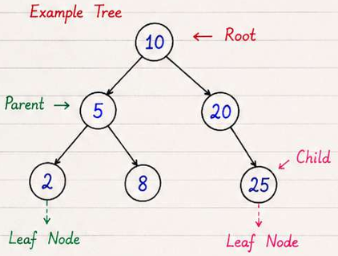
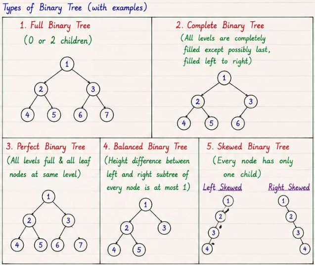
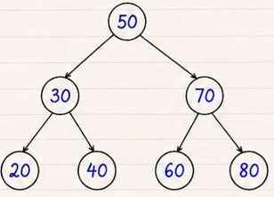
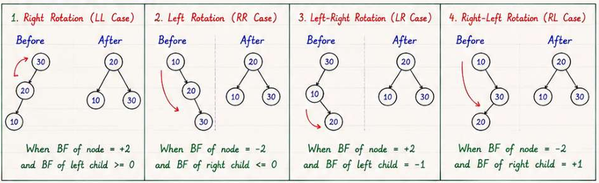

Trees and Graphs
Tree
Tree is a hierarchical data structure that consists of nodes connected by edges.
It has a root node and zero or more child nodes, forming a parent-child relationship.

Terminology:
- Root: The topmost node in a tree.
- Parent: A node that has child nodes.
- Child: A node that has a parent node.
- Sibling: Nodes that share the same parent.
- Leaf: A node that has no children.
- Internal Node: A node that has at least one child.
- Level: The depth of a node in the tree, starting from the root at level 0.
- Depth: The length of the path from the root to a node.
- Height: The length of the longest path from a node to a leaf.
- Subtree: A tree formed by a node and all its descendants.
- Degree: The number of children a node has.
Usage of Trees:
- Represent hierarchical data (e.g., file systems, organizational structures)
- Facilitate efficient searching and sorting (e.g., binary search trees)
- Enable efficient data storage and retrieval (e.g., heaps, tries)
Binary Tree
Tree in which each node has at most two children, referred to as the left child and the right child.

class TreeNode {
int val;
TreeNode left;
TreeNode right;
TreeNode(int x) { val = x; }
}
Traversal of Binary Tree
1
/ \
2 3
/ \
4 5
| Traversal Type | Order of Nodes Visited | Example | Type | Time Complexity | Space Complexity |
|---|---|---|---|---|---|
| Preorder | Root → Left → Right | 1, 2, 4, 5, 3 | DFS | O(n) | O(h) |
| Inorder | Left → Root → Right | 4, 2, 5, 1, 3 | DFS | O(n) | O(h) |
| Postorder | Left → Right → Root | 4, 5, 2, 3, 1 | DFS | O(n) | O(h) |
| Level Order | Level by Level | 1, 2, 3, 4, 5 | BFS | O(n) | O(w) |
- n = number of nodes, h = height of the tree, w = maximum width of the tree
PREORDER_TRAVERSAL(node):
if node == null:
return
visit(node)
PRE_ORDER_TRAVERSAL(node.left)
PRE_ORDER_TRAVERSAL(node.right)
INORDER_TRAVERSAL(node):
if node == null:
return
IN_ORDER_TRAVERSAL(node.left)
visit(node)
IN_ORDER_TRAVERSAL(node.right)
POSTORDER_TRAVERSAL(node):
if node == null:
return
POST_ORDER_TRAVERSAL(node.left)
POST_ORDER_TRAVERSAL(node.right)
visit(node)
LEVEL_ORDER_TRAVERSAL(root):
if root == null:
return
queue = new Queue()
queue.enqueue(root)
while not queue.isEmpty():
node = queue.dequeue()
visit(node)
if node.left != null:
queue.enqueue(node.left)
if node.right != null:
queue.enqueue(node.right)
Binary Search Tree (BST)
- Values in left subtree < Node < Values in right subtree
- No duplicates allowed
- Inorder traversal of BST gives sorted order of elements
- Time Complexity:
- Average Case: O(log n)
- Worst Case: O(n) (when the tree is skewed)

SEARCH(root, key):
if root == null:
return null
if key == root.value:
return root
if key < root.value:
return SEARCH(root.left, key)
return SEARCH(root.right, key)
INSERT(root, key):
if root == null:
return new Node(key)
if key < root.value:
root.left = INSERT(root.left, key)
else if key > root.value:
root.right = INSERT(root.right, key)
return root
AVL Tree - Self-Balancing Binary Search Tree
- Balance factor of each node = height(left subtree) - height(right subtree)
- Balance factor ∈ {-1, 0, 1} for all nodes i.e Height of left and right subtrees differ by at most 1
- Rotations (LL, RR, LR, RL) are used to maintain balance
- Height of AVL tree = O(log n)

- Applications: Databases, File Systems, Memory Management
HEIGHT(node):
if node == null:
return 0
return max(HEIGHT(node.left), HEIGHT(node.right)) + 1
BALANCE_FACTOR(node):
if node == null:
return 0
return HEIGHT(node.left) - HEIGHT(node.right)
RIGHT_ROTATE(y):
x = y.left
T = x.right
x.right = y
y.left = T
y.height = 1 + MAX(HEIGHT(y.left), HEIGHT(y.right))
x.height = 1 + MAX(HEIGHT(x.left), HEIGHT(x.right))
return x
LEFT_ROTATE(x):
y = x.right
T = y.left
y.left = x
x.right = T
x.height = 1 + MAX(HEIGHT(x.left), HEIGHT(x.right))
y.height = 1 + MAX(HEIGHT(y.left), HEIGHT(y.right))
return y
INSERT(root, key):
// Normal BST insertion
if root == null:
return new Node(key)
if key < root.value:
root.left = INSERT(root.left, key)
else if key > root.value:
root.right = INSERT(root.right, key)
else:
return root // duplicate
// Update height
root.height = 1 + MAX(
HEIGHT(root.left),
HEIGHT(root.right)
)
balance = BALANCE_FACTOR(root)
// LL Case
if balance > 1 and key < root.left.value:
return RIGHT_ROTATE(root)
// RR Case
if balance < -1 and key > root.right.value:
return LEFT_ROTATE(root)
// LR Case
if balance > 1 and key > root.left.value:
root.left = LEFT_ROTATE(root.left)
return RIGHT_ROTATE(root)
// RL Case
if balance < -1 and key < root.right.value:
root.right = RIGHT_ROTATE(root.right)
return LEFT_ROTATE(root)
return root
Heap
- Complete Binary Tree
- Max Heap: Parent node >= Child nodes
- Min Heap: Parent node <= Child nodes
- Applications: Priority Queue, Heap Sort, Graph Algorithms (Dijkstra's, Prim's)

Array representation of Heap:
- For node at index i:
- Left child index = 2 * i + 1
- Right child index = 2 * i + 2
- Parent index = (i - 1) / 2
- Root node is at index 0
- Leaf nodes are at indices n/2 to n-1 (0-based indexing)
Operations on Heap:
- Insert
- Insert at end > Heapify up (compare with parent and swap if necessary)
- Delete
- Replace root with last element > Heapify down (compare with children and swap if necessary)
- Build Heap
- Assume all elements are in the array, leaf nodes are already heaps
- Operate on all non-leaf nodes from bottom to top and heapify each node
INSERT_HEAP(arr, key):
arr.append(key)
i = length(arr) - 1
while i != 0 and arr[PARENT(i)] < arr[i]:
swap(arr[i], arr[PARENT(i)])
i = PARENT(i)
DELETE_HEAP(arr, key):
index = FIND_INDEX(arr, key)
if index == -1:
return
arr[index] = arr[length(arr) - 1]
arr.pop()
HEAPIFY(arr, length(arr), index)
HEAPIFY(arr, n, i):
largest = i
left = 2 * i + 1
right = 2 * i + 2
if left < n and arr[left] > arr[largest]:
largest = left
if right < n and arr[right] > arr[largest]:
largest = right
if largest != i:
swap(arr[i], arr[largest])
HEAPIFY(arr, n, largest)
Graph
Non linear data structure consisting of nodes (vertices) and edges connecting them.
- G = (V, E) where V is a set of vertices and E is a set of edges
- May be directed or undirected, weighted or unweighted, cyclic or acyclic.
- Applications: Social Networks, Web Graphs, Transportation Networks, Network Routing, Dependency Graphs
Terminology:
- Vertex: A node in the graph
- Edge: A connection between two vertices
- Degree: Number of edges connected to a vertex
- Weight: The value associated with an edge, representing cost, distance, or capacity
- In-degree: Number of edges coming into a vertex (for directed graphs)
- Out-degree: Number of edges going out from a vertex (for directed graphs)
- Path: A sequence of edges connecting a sequence of vertices
- Cycle: A path that starts and ends at the same vertex

- Undirected Graph: A graph in which edges do not have a direction, and can be traversed in both directions
- Directed Graph (Digraph): A graph in which edges have a direction, going from one vertex to another
- Weighted Graph: A graph in which edges have weights or costs associated with them
- Unweighted Graph: A graph in which edges do not have weights or costs associated with them
- Connected Graph: A graph in which there is a path between every pair of vertices
- Disconnected Graph: A graph in which at least two vertices are not connected by a path
Graph Representation

| Property | Adjacency Matrix | Adjacency List |
|---|---|---|
| Structure | V × V 2D array |
Array / HashMap of size V |
| Edge Storage | matrix[i][j] = 1/weight if edge exists, else 0 |
Each vertex stores a list of adjacent vertices |
| Undirected Graph | Symmetric | Store both directions |
| Directed Graph | Generally asymmetric | Store outgoing edges |
| Weighted Graph | Cell stores edge weight | Store (neighbor, weight) |
| Check Edge | O(1) | O(degree) |
| Find Neighbors | O(V) | O(degree) |
| Add Edge | O(1) | O(1) |
| Remove Edge | O(1) | O(degree) |
| Best For | Dense graphs | Sparse graphs |
| Space Complexity | O(V²) | O(V + E) |
| Key Advantage | Fast edge existence check | Memory efficient & fast neighbor traversal |
| Operation | Matrix | List |
|---|---|---|
| Create | V × V array |
V empty lists |
| Add edge | matrix[u][v] = 1 |
graph[u].add(v) |
| Remove edge | matrix[u][v] = 0 |
graph[u].remove(v) |
| Check edge | matrix[u][v] != 0 |
v in graph[u] |
| Get neighbors | Scan row u |
graph[u] |
Graph Traversal
Traversal is the process of visiting all the vertices and edges of a graph in a systematic manner
| Property | Depth-First Search (DFS) | Breadth-First Search (BFS) |
|---|---|---|
| Approach | Explore as far as possible along each branch before backtracking | Explore all neighbors at the present depth prior to moving on to nodes at the next depth level |
| Data Structure | Stack (recursion or explicit) | Queue |
| Time Complexity | O(V + E) | O(V + E) |
| Space Complexity | O(V) | O(V) |
| Use Cases | Topological sorting, cycle detection, pathfinding in mazes | Shortest path in unweighted graphs, level order traversal |
BFS goes wide and DFS goes deep.
// Depth-First Search (DFS)
DFS(graph, start, visited):
visited.add(start)
visit(start)
for neighbor in graph[start]:
if neighbor not in visited:
DFS(graph, neighbor, visited)
// Breadth-First Search (BFS)
BFS(graph, start):
visited = set()
queue = new Queue()
queue.enqueue(start)
visited.add(start)
while not queue.isEmpty():
vertex = queue.dequeue()
visit(vertex)
for neighbor in graph[vertex]:
if neighbor not in visited:
visited.add(neighbor)
queue.enqueue(neighbor)
BFS DFS Applications
// Shortest Path in Unweighted Graph
SHORTEST_PATH_UNWEIGHTED(graph, start, target):
visited = set()
queue = new Queue()
queue.enqueue((start, 0)) // (vertex, distance)
visited.add(start)
while not queue.isEmpty():
(vertex, distance) = queue.dequeue()
if vertex == target:
return distance
for neighbor in graph[vertex]:
if neighbor not in visited:
visited.add(neighbor)
queue.enqueue((neighbor, distance + 1))
return -1 // target not reachable
// Cycle Detection in Undirected Graph
HAS_CYCLE_UNDIRECTED(graph):
visited = set()
for vertex in graph:
if vertex not in visited:
if DFS_CYCLE(graph, vertex, visited, -1):
return true
return false
// Cycle Detection in Directed Graph
HAS_CYCLE_DIRECTED(graph):
visited = set()
recursionStack = set()
for vertex in graph:
if vertex not in visited:
if DFS_CYCLE_DIRECTED(graph, vertex, visited, recursionStack):
return true
return false
// Connected Components in Undirected Graph
CONNECTED_COMPONENTS_UNDIRECTED(graph):
visited = set()
components = []
for vertex in graph:
if vertex not in visited:
component = []
DFS_COMPONENT(graph, vertex, visited, component)
components.append(component)
return components
// Topological Sort in Directed Acyclic Graph (DAG) - Kahn's Algorithm
// Topological sort is a linear ordering of vertices such that for every directed edge u → v, vertex u comes before v in the ordering.
// If the graph has a cycle, topological sort gives result < V
TOPOLOGICAL_SORT(graph):
queue = new Queue()
inDegree = array of size V, initialized to 0
for vertex in graph:
for neighbor in graph[vertex]:
inDegree[neighbor]++
for vertex in graph:
if inDegree[vertex] == 0:
queue.enqueue(vertex)
while not queue.isEmpty():
vertex = queue.dequeue()
visit(vertex)
for neighbor in graph[vertex]:
inDegree[neighbor]--
if inDegree[neighbor] == 0:
queue.enqueue(neighbor)
Graph Algorithms
// Dijkstra's Algorithm
// Finds the shortest path from a source vertex to all other vertices in a weighted graph with non-negative edge weights
Dijkstra(graph, source):
dist = array of size V, initialized to ∞
dist[source] = 0
priorityQueue = new MinHeap()
priorityQueue.insert((0, source)) // (distance, vertex)
while not priorityQueue.isEmpty():
(currentDist, u) = priorityQueue.extractMin()
if currentDist > dist[u]:
continue
for each neighbor v of u:
weight = edge weight from u to v
if dist[u] + weight < dist[v]:
dist[v] = dist[u] + weight
priorityQueue.insert((dist[v], v))
return dist
// Bellman-Ford Algorithm
// Finds the shortest path from a source vertex to all other vertices in a weighted graph, even with negative edge weights, and detects negative-weight cycles
BellmanFord(graph, source):
dist = array of size V, initialized to ∞
dist[source] = 0
for i from 1 to V-1:
for each edge (u, v) with weight w in graph:
if dist[u] + w < dist[v]:
dist[v] = dist[u] + w
// Check for negative-weight cycles
for each edge (u, v) with weight w in graph:
if dist[u] + w < dist[v]:
throw "Graph contains a negative-weight cycle"
return dist
// Prim's Algorithm
// Finds the Minimum Spanning Tree (MST) of a connected, undirected graph with weighted edges
Prim(graph, start):
mstSet = set() // vertices included in MST
key = array of size V, initialized to ∞
parent = array of size V, initialized to -1
key[start] = 0
priorityQueue = new MinHeap()
priorityQueue.insert((0, start)) // (key, vertex)
while not priorityQueue.isEmpty():
(currentKey, u) = priorityQueue.extractMin()
mstSet.add(u)
for each neighbor v of u:
weight = edge weight from u to v
if v not in mstSet and weight < key[v]:
key[v] = weight
parent[v] = u
priorityQueue.insert((key[v], v))
return parent // Represents the MST edges